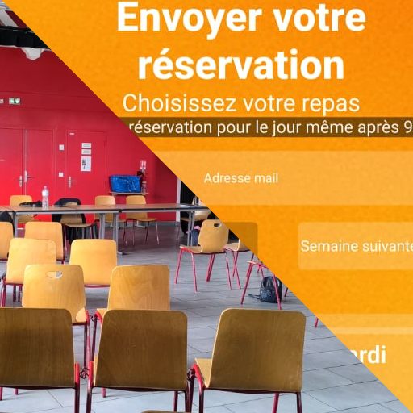
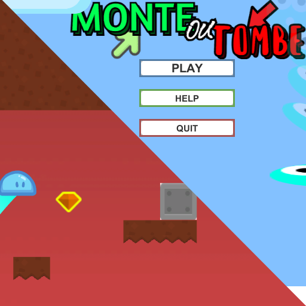

USR : Bananium Rush 2026 (3semaines)

USR Bananium Rush est un jeu en temps réel mélangeant gestion et deck building.
Vous incarnez le commandant d'une mission spatiale dans un futur alternatif.
Dans cet avenir, les singes ont remplacé les humains suite à des expériences menées sur ces animaux pour les améliorer génétiquement.
Cet nouvel ordre mondial part à l'exploration de l'espace et y découvre une ressource qui va devenir indispensable : le bananium.
Votre objectif principal est de réduire au silence des groupes de singes n'obéissent plus au commandement de l'Union des République des Singes (Union of Samiens Republic).
Pour ce faire, vous disposez de cartes (préalablement choisis en fonction de votre stratégie) qui vous permettent de déployer bâtiment, unités et capacités stratégiques.
Mais attention, vos ressources sont limitées et votre adversaire ne vous laissera pas de répit pour préparer vos attaques.
Ce jeu a été produit à l'aide du moteur créé par nos soins le FS-Engine.
Compétences travaillées :
- Game design
- Game feel
- Équilibrage gameplay
- C++ et .json
Liens :
- GitHub du projet
- Démo du jeu
FS-Engine 2026 (4semaines)

FS-Engine est un moteur de jeu custom développé en C++ durant 4 semaines.
Il utilise le pipeline de rendu dx12 pour rendre des géométries 3D et sprites 2D.
Nous avons initialisé, encapsulé et architecturé dx12 pour concevoir ce moteur.
Notre partie rendu supporte les couleurs, les textures, la transparence, la lumière ainsi que les rotations et translations 3D.
Nous avons utilisé cette librairie de rendu dans notre moteur personnalisé de type ECS.
Ce moteur possède des components, des systems, un héritage parent/enfant pour les TransformComponents ainsi que des scenes chargées et déchargées dynamiquement.
Ce moteur et sa partie rendu nous a permis de produire le jeu du projet suivant, que nous avons intitulé USR : Bananium rush.
Compétences travaillées :
- Résilience
- Unity 2D
- Visual Scripting
Liens :
-
GitHub
du jeu